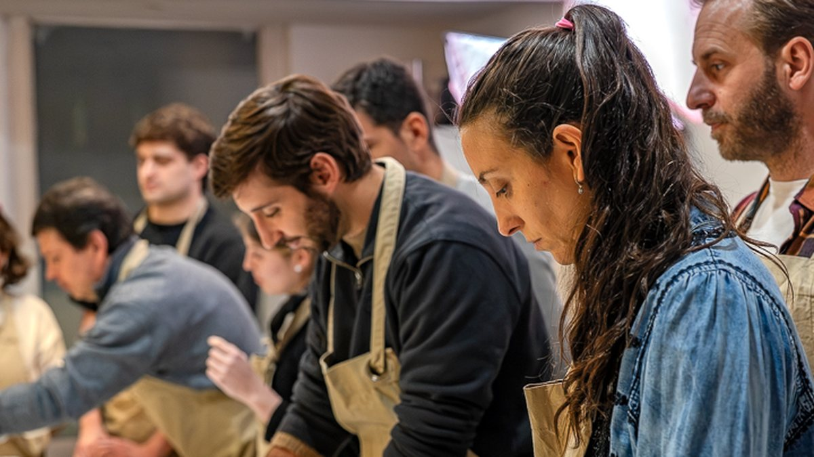

Experiencia · viernes 18 de setiembre
Cena y Taller de Tapeo
Gyozas de hongos y verduras, gírgolas asadas, buñuelos de chucrut y croquetas de puerro. Los hacemos entre todos y después nos sentamos a comerlos, con las dos copas de vino o kombucha que entran, y la sobremesa que salga. Solo 12 lugares.
$2.600 por persona
Ver la experiencia